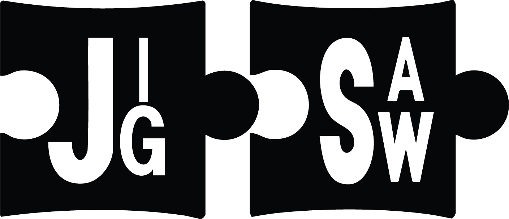

Detecting and neutralising threats online with our superior security and amazing service.
We are a manager cybersecurity company, JigSaw based in Victoria, VIC. We speicialise in developing and immplementing secure software and hardware solutions for buisnesses of every category. We are a team of passionate and engaging cyber engineers and designers that are dedicated to provide and devliver reliable and high quality products for their clients.
Come and Work closely with JigSaw cyber experts to enhance your security and accelerate your softwares resilience to cyber attacks.
Jigsaw is considered a leading user and data security cybersecurity company, entrusted to safeguard both organizations and individuals while driving digital transformation and growth. Our range of solutions are adapted in real-time to how people interact with data, providing secure access while creating new value.
Individuals who have experience in a competitive workspace and have the following requirements:
© Contact JigSaw Email:
info@jigsaw.com.au